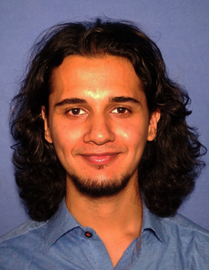

|
Yashodhan Manerikar
Personal Page
|

Hello!
Welcome to my webpage! I am a post-graduate student of physics and astronomy currently between my master's and doctorate.
I am from Maharashtra, India. I have
lived in Tamil Nadu for education, also in SW Germany and Moscow for research visits. I am currently located in Pune.
I have done my BS+MS in Physics from Indian Institute of Technology Madras.
I am freelancing as a science/mathematics educator and an artist to make ends meet as I work on my research projects and prepare my profile in order to apply for PhDs.
I speak Marathi, English, Hindustani, German as well as basic Russian and Tamil.
|